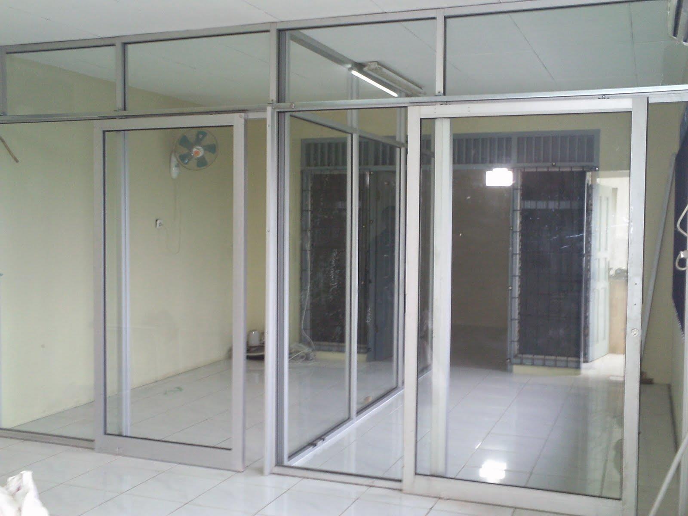

Kaca merupakan salah satu unsur yang cukup penting pada sebuah bangunan bagus untuk rumah tinggal, pertokoan, gedung bertingkat maupun multi use building. Kaca kian melengkapi bangunan supaya kelihatan lebih cantik dan memiliki nilai estetika jika di pandang orang. Kini sudah hadir banyak jenis kaca hingga lantai kayu jati yang bisa anda aplikasikan pada bangunan yang anda buat.
Kini telah hadir bermacam-macam maca tipe kaca yang dapat dijumpai, tiap-tiap kaca mempunyai fungsinya masing-masing. Bisa untuk system keamanan, estetika dan masih banyak yang dapat di temukan dari pemasangan kaca. Macam kaca-kaca tersebut diantaranya merupakan kaca tempered, kanopi kaca, kaca frameless, kaca cermin, railing kaca dan masih banyak variasi kaca lainnya yang bisa anda dapatakan dan anda aplikasikan pada bangunan. Segala material hal yang demikian dapat di aplikasikan harga sebuah hunian kelihatan lebih indah nyaman dan juga aman. Berikut ini sedikit penjelasan mengenai berbagai ragam kaca dan fungsi kaca dan juga parket lantai kayu jati yang bisa anda dapatkan.
Distributor & Supplier Pintu Kaca di Tegal
Pintu kaca Tegal benar-benar berkhasiat bagi anda yang berharap menabah kesan gedung lebih cantik dan mewah. Anda bisa pilih desain seperti apa yang Anda sukai. Perlengkapan teladan pintu kaca Tegal dapat anda temukan, tidak hanya teladan pintu kaca Tegal konvensional, adalah pintu kaca Tegal lipat, tetapi juga pintu kaca Tegal geser. Mengenai modelnya, Anda dapat putuskan apakah berkeinginan mempunyai pintu kaca Tegal desain lipat, geser, atau contoh yang lain. Tersedia sebagian tipe kaca dengan kualitas yang terbaik, mulai dari kaca tempered hingga yang non-tempered. Anda tinggal tentukan saja figur pintu kaca Tegal seperti apa yang berharap Anda miliki.
Dis.or.id menyediakan pintu kaca Tegal dengan beragam variasi yang bisa anda pilih sesuai kebutuhan.
Dis.or.id siap untuk membikin pintu kaca Tegal sesuai dengan apa yang Anda inginkan. Anda dapat memilih kaca tempered yang sekarang ini sedang naik daun.
Info Pemesanan Selengkapnya
Google Maps: https://www.google.com/maps/d/u/0/viewer?mid=1Oev1fV01o8gQSuJ72jMMShl0CllevHqY&ll=-7.27380280025364%2C112.65243155000007&z=18
Event: https://www.facebook.com/events/174522916469442/
Portfolio Produk: https://www.facebook.com/1681607345472479/photos/?tab=album&album_id=1712632585703288
Jasa Pemasangan Railing Kaca
Maka dari itu, komponen-bagian tangga tak lagi diciptakan dengan bahan kayu. Anda dapat mengerjakan eksplorasi dengan mengaplikasikan bahan berupa kaca ketika berharap mempunyai rumah dengan desain minimalis. Melainkan, selain desain, Anda juga perlu mengamati bahan yang diterapkan. Sebaiknya gunakan kaca tempered karena macam kaca ini sangat kuat. Seandainya itu, dari segi keamanan, kaca tempered ini juga tepat seandainya menjadi opsi Anda. Melainkan kaca pecah, kaca tempered tidak akan melukai orang yang terkena kaca tempered tersebut lantaran pecahan seperti itu kecil dan lembut, tak berupa kepingan yang runcing.
Anda dapat memilih kaca dengan kwalitas terbaik. Tidak ini tidak cuma ditetapkan oleh ketebalan atau harga namun juga oleh variasi. Ada kaca tempered yang kini diminati banyak orang. Jikalau mensupport keamanan, railing kaca ini juga akan mempercantik desain interior rumah Anda. Pecahannya sangat kecil dan lembut sehingga tidak akan melukai siapa saja yang terkena pecahan. Aluminum umumnya yang diterapkan sebagai railing atau pigura. Pastikan juga aluminum ini benar-benar baik dan kuat.
Sekarang dis.or.id sudah menyediakan railing kaca berkulitas dan berkualitas. Dengan harga yang benar-benar terjangkau, anda bisa seketika menerima railing kaca yanag anda inginkan.
Distributor, Supplier & Jasa Pasang Kanopi Kaca
Seiring dengan perkembangan zaman di dunia properti, kini kanopi kaca telah berkembang cepat meniru arsitektur modern. Diantaraya adalah kaca tempered 8 mm, kaca tempered 10 mm clear, kaca tempered 12 mm clear, kaca laminated 12 mm clear, kaca laminated 5 mm + 5 mm clear non tempered kaca, kaca laminated 5 mm + 5 mm tempered clear dan masih banyak lagi. Harga dari tiap kaca yang ditawarkan cukup beragam tergantung kaca yang nanti akan diterapkan. Harga atap kaca per meter persegi juga sangat dipengaruhi oleh struktur pensupport yang di gunakan. Ada banyak pilihan varian desain. Sekiranya tembus pandang, kaca mengabsorpsi cahaya yang masuk sehingga semakin tebal kaca karenanya kian sedikit sinar yang bisa melaluinya, maka sifat transparannya makin berkurang.|Di samping pintu kaca shower akan membuat kamar mandi kecil tampak lebih besar.
Ini terlihat dari bahan material yang di pakai dalam pembuatan kanopi kaca. Dis.or.id juga menyediakan jasa pemasangan kanopi kaca yang tentunya dengan bantuan energi professional yang sudah berpengalaman. Banyak bangunan seperti gedung perkantoran, perumahan, ruko dan apartement yang memakai kanopi kaca tempered. Jika fungsi utama kanopi sebagai pelindung untuk bangunan tersebut, pemasangan kanopi kaca juga dapat membikin bangunan menjadi tampak lebih indah dan menarik, apalagi menerapkan konsep yang sama dengan konsep rumah minimalis. Sesudah kaca untuk atap kanopi cukup digemari.
Distributor & Supplier Kaca Shower

Anda pastinya meninginkan desain kamar mandi rumah layaknya kamar mandi hotel berbintang yang memakai kamar mandi duduk serta dilengkapi shower ataupun bath tub. Salah satu metode yang bisa digunakan untuk menciptakan kamar mandi yang selalu bersih adalah memakai shower karena sistem pembersihannya memang jauh lebih praktis dibanding dengan yang menerapkan konsep bak mandi. Kelebihan shower screen dibanding dengan cara penyekatan yang lain adalah dijadikan dalam wujud yang telah jadi dan tinggal dipasang saja. Shower screen merupakan kotak atau alat yang berfungsi sebagai penyekat ruang khusus untuk kamar mandi. Seandainya pemasangannya juga betul-betul mudah dijalankan dan tidak membutuhkan waktu yang lama. Kecuali ini akan berimbas kepada biaya yang akan dikeluarkan untuk membayar tukang. Apalagi kini sudah ada warung penjual shower screen yang menjual produknya dalam cara satu paket termasuk pemasangannnya.
Tak anda sedang memerlukan kaca shower, hal yang perlu anda lakukan yaitu mengunjungi dis.or.id. Tak hanya itu, kaca shower yang di beli di dis.or.id pemasangan lebih gampang dan fleksibel. Tak terbaik dan harga terjangkau.
Distributor, Supplier & Jasa Pasang Kanopi Kaca
Seiring dengan perkembangan zaman di dunia properti, kini kanopi kaca terlah berkembang kencang mengikuti arsitektur modern . Canopy kaca dengan atap kaca memang sebuah bangunan yang asangat elgan untuk jaman modern seperti sekarang ini dengan harga yang sangat lumayan sekiranya di bandingkan kanopi atap lazim. Jikalau tembus pandang, kaca menyerap cahaya yang masuk sehingga semakin tebal kaca karenanya semakin sedikit cahaya yang dapat melaluinya, maka sifat transparannya makin berkurang.|Di samping pintu kaca shower akan membuat kamar mandi kecil terlihat lebih besar. Pada atap akrilik, penyerapan sinar yang terjadi demikian kecil sehingga meski ketebalannya bertambah, sifat transparannya tak banyak berubah. Atap akrilik atau bisa juga disebut atap kaca acrylic ini banyak ditemukan di sebuah bangunan rumah, seperti ruko, apartemen, cafe, mall, hingga bangunan gedung.
Seiring dengan perkembangan dunia properti, kini kanopi kaca tempered telah berkembang kencang mengikuti arsitektur modern. Kalau itu, kanopi juga dapat melindungi mobil dan kendaraan lain anda. Setelah kaca untuk atap kanopi cukup digemari. Tidak anda sedang mencari kanopi kaca, anda dapat segera mengunjungi dis.or.id. Disana anda akan mendapatkan kanopi kaca yang layak dengan bermacam-macam ketebalan dan harga yang cukup terjangkau.
Jasa Maintenance Kaca
Maintenance pada kaca benar-benar diperlukan agar gedung pencakar langit milik Anda menonjol baik dan bersih. Sudah beberapa tahun, kaca gedung menjadi kusam karena terik cahaya matahari, debu, hujan, atau kotoran lainnya. Jasa maintenance kaca juga menawarkan pelayanan pembetulan. Tak ada kaca yang rusak atau pecah, kapabel untuk mengerjakan perbaikan sanggup membersihkan beragam jenis kaca dengan ukuran, betuk, serta warna yang pantas dengan yang Anda butuhkan. Perlengkapan tipe kotoran seperti debu serta cahaya sang surya dan juga hujan tak jarang membikin kaca gedung menjadi kusan dan tak menarik. Kekuatan yang di pakai untuk jasa maintenance kaca diantaranya godole, rope access, crane, dan scaffolding.
Lebih dari itu, Jikalau spesialis yang dimilik oleh dis.or.id juga bisa membetulkan kaca yang rusak. Dis.or.id menyiapkan segala ragam kaca pantas kebutuhan ketika ini. Jikalau juga dengan warna dan wujud kaca.
Disana anda bisa memanfaatkan jasa maintenance kaca dengan kekuatan pakar yang kapabel membersihkan gedung kaca dengan produk pembersih kaca apa yang terbaik untuk menghilangkan kotoran dan kusam. Oleh karena itu, dis.or.id hanya memilih orang-orang yang sungguh-sungguh profesional dan sudah memiliki pengalaman dalam hal maintenance kaca. Dengan telah memberikan training kepada tenaga ahli sehingga mereka telah dapat melakukan profesi mereka dengan sangat baik. Kecuali hanya dalam hal membersihkan kaca, mereka juga cakap mengerjakan pembetulan serta penggantian kaca yang mengalami kerusakan.
Jasa Pemasangan Kaca Tempered
Tidak yang telah di kenal bahwa jasa pemasangan kaca tempered hanya dilakukan oleh orang yang profesional. Semakin banyak orang yang mau memakai kaca ini. Dengan pengerjaan pendinginan yang kencang membikin kaca mempunyai kelenturan dan tenaga yang baik terhadap tekanan di kedua sisi permukaan kaca. Kaca ragam Tempered memiliki energi 4-5 kali lebih baik dibandingkan kaca awam dengan ketebalan yang sama. Kini, kian banyak properti yang memakai kaca tempered.
Banyak hal yang dapat dilakukakn kaca tempered ini salah satunya sebagai pembatas, untuk kamar mandi dan masih banyak lagi. Bukan sembarang alat yang dipakai untuk memotong kaca tempered sesuai dengan keperluan. Tidak dikala ini anda sedang berkeinginan membangun suatu bangunan atau gedung, anda bisa memanfaatkan kaca tempered untuk dipakai segera ke seluruh variasi bidang. Anda bisa langsung mengunjungi dis.or.id untuk menerima isu mengenai jasa pemasangan kaca tempered, menerapkan kaca tempered dan pastinya hasil yang dikasih pun akan layak dengan apa yang Anda inginkan.
Jual Kaca Cermin
Kaca cermin kini mempunyai desain yang berbeda. Kaca cermin juga diciptakan untuk yang lain seperti pintu. kaca cermin awam diterapkan pada bukaan pintu atau jendela dinding luar, yang nantinya diinginkan berpenampilan mewah pada bangunan. Ukurannya pun dapat Anda sesuaikan dengan kebutuhan. Ada cermin persegi yang direkatkan beraturan, cermin berbentuk seperti daun, dan lain sebagainya. Jadi, hanya terlihat transparan dari satu sisi saja. Untuk membuat ruangan private, karenanya kaca ini transparan jika diamati dari dalam. Cermin minimalis mempunyai siku. Anda seolah sedang bercermin.
Sekarang, ada cermin framless. Dan bahan yang digunakan untuk membikin frame pun berbeda-beda. Ada yang terbuat dari plastik, kayu, dan aluminum. Dengan tipe kaca ini, orang yang berada di luar ruangan tak bisa mengamati apa yang ada di dalam ruangan. Sementara itu, Anda yang berada di dalam ruangan dapat memandang orang lain yang ada di luar. Atau kaca cermin ini juga dapat dihasilkan sebagai bahan pintu lemari. Melainkan kunjungi dis.or.id untuk menerima penawaran menarik.
Distributor & Supplier Pintu Lipat Kaca
Sebab keunggulan yang dimiliki hal yang demikian, Anda pasti berdaya upaya harga pintu kaca lipat frameless ini mahal. Jika ruang makan bersebelahan dengan taman, Anda dapat sekat dengan pintu lipat kaca ini. Macam kaca nomor 6 ini benar-benar direkomendasikan untuk dijadikan sebagai bahan membuat pintu lipat kaca.
Timbul pertanyaan mengapa Sepatutnya menerapkan kaca tempered. Akan tetapi, ada juga penentu harga lainnya seperti aksesoris.
Jasa Pemasangan Kubikel Toilet
Kubikel kaca banyak dijumpai di berbagai daerah besar seperti perkantoran, gedung, bahnkan kini juga dapat di gunakan untuk hunian rumah. Banyak profit yang dapat di daptkan dengan menggunakan kubikel WC diantaranya yaitu tampilan yang lebih elegan dan lebih bersih.
Anda juga bisa membuat WC di space yang lebih kecil dan tak memerlukan lahan yang seperti itu besar untuk membuat kamar mandi yang banyak. Kubikel WC atau kubikel kamar mandi ini lebih murah di banding dengan pembuatan kamar mandi atau kamar mandi konvensional. Jikalau anda berminat untuk mempunyai kubikel WC, anda dapat lantas mengunjungi dis.or.id.
Harga yang ditawarkan malahan cukup terjangkau.
Sebab disana terdapat pelbagai ukuran kubikel toilet yang bisa anda jadikan pilihan untuk hunian atau temap usaha anda. Justru embun bisa menempel di kaca dan lambat laun bisa membuat kaca tidak sejernih semula. Kalau anda ketika ini sedang membutuhkan kaca shower untuk kamar mandi, langsung saja kunjungi dis.or.id untuk melakukakn pengorderan maupun menanyakan terperinci harga dari kaca shower. Kaca shower yang di jual di jamin kaca shower yang mempunyai kwalits terbaik dan berkwalitas tinggi.
Distributor & Supplier Partisi Kaca

Partisi kaca kini hanya di perkantoran modern atau sentra perbelanjaan. Banyak rumah hunian yang sekatnya terbuat dari kaca. Biaya ini disebabkan banyak keunggulan dari partisi modern ini. Sebab memang biaya pembuatan partisi ini jauh lebih murah. Tarif yang satu ini tergantung lama proses. Berbeda sekiranya Anda memilih partisi kaca. pemasangan lebih murah karena membutuhkan waktu yang lama untuk memasang partisi yang terbuat dari kaca tersebut. Lain Anda memilih memakai partisi kaca. Bahan ini lebih murah dan dalam pemasangan. Anda tahu ada kaca transparan, semi transparan dan kaca yang sama sekali tidak transparan yang kerap disebut dengan kaca cermin. itu, teladan partisi kaca ada yang frameless (tanpa bingkai) dan juga ada yang memakai pigura. Disana anda akan partisi kaca yang layak dengan harapan anda.